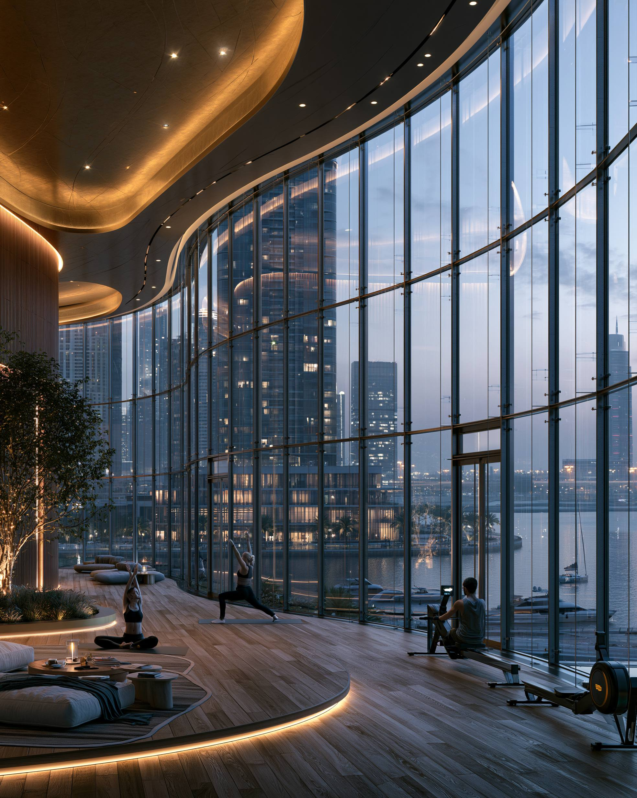

STARTUPS ? BUSINESS ? GCC
The Gulf region is becoming one of the world's most exciting destinations for founders, startups and business owners. From Dubai's global ecosystem to Riyadh's rapid expansion, opportunities are growing across the GCC.
The GCC offers strong infrastructure, strategic geography, international connectivity, growing consumer markets and ambitious government development programs.
Entrepreneurs can access markets across the Middle East, Africa, South Asia and beyond while operating from some of the world's fastest-growing cities.
Dubai remains the Gulf's leading startup destination. The city offers international networking opportunities, free zones, global connectivity and access to investors from around the world.
Technology, consulting, e-commerce, media, finance and professional services continue thriving in Dubai.
Riyadh is rapidly emerging as one of the region's most exciting business destinations. Vision 2030 initiatives are driving investment, innovation and startup growth.
Entrepreneurs targeting Saudi Arabia's large domestic market increasingly view Riyadh as a major opportunity.
Abu Dhabi offers a stable business environment, strong government support and growing technology and innovation sectors.
The city appeals to founders focused on long-term growth, investment and strategic partnerships.
Doha continues expanding its startup ecosystem through investment, infrastructure development and economic diversification.
The city provides opportunities in technology, professional services, logistics and innovation-driven industries.
Manama has developed a reputation as one of the GCC's most startup-friendly cities, particularly in fintech and digital services.
Its business environment and accessibility make it attractive to founders launching regional ventures.
Muscat offers growing opportunities for entrepreneurs focused on tourism, services, logistics and lifestyle-related businesses.
The city appeals to founders seeking a balanced lifestyle and lower operating intensity than larger Gulf markets.
Kuwait City remains an important commercial center with opportunities across finance, consulting, retail and professional services.
Entrepreneurs targeting the Kuwaiti market can benefit from strong purchasing power and established business networks.
No single city is perfect for every entrepreneur. Dubai leads in international connectivity, Riyadh offers extraordinary growth potential, Abu Dhabi provides stability and Doha, Manama, Muscat and Kuwait City each offer unique advantages.
The best location depends on your industry, target market, business model and long-term vision.